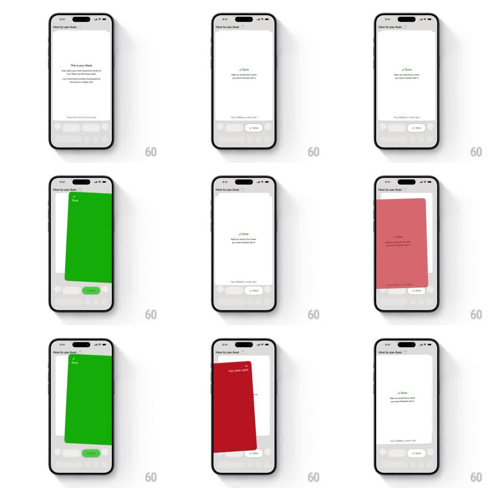

Media
Frame-by-frame

Rebuild this interaction 1:1: Avec's swipe-direction tutorial - onboarding cards teach Stack and Done; swiping right floods the card green for Done, swiping left floods it red, and the copy and action pill follow the direction.

Rebuild this interaction 1:1: Avec's swipe-direction tutorial - onboarding cards teach Stack and Done; swiping right floods the card green for Done, swiping left floods it red, and the copy and action pill follow the direction.
## Integration
Integration: stack-agnostic spec - springs given as stiffness/damping, timed motions as duration + curve; map every value to your framework and animation library of choice.
## Scene
"How to use Avec" sheet: a white email card center ("This is your Stack" / "Done - Mark an email Done when you have finished with it") with a hint line and action pills below, over a faint inbox backdrop.
## Motion spec
Pattern: direction-aware card swipe with full-card color verdicts.
- Drag moves the card 1:1 with rotateZ up to +/- 10 degrees, pivot at the bottom corner.
- Crossing the commit threshold (~30% width) fills the whole card with the verdict color: green sweeping in from the right for Done, red from the left - the fill is a wipe tied to drag distance, not an overlay fade.
- The card's copy crossfades to match ("Done" with a check on green) as the fill passes mid-card.
- Release past threshold: the card flicks off in the swipe direction (velocity-inherited, 300ms) and the next card slides up from behind (scale 0.95 -> 1, 250ms).
- The matching action pill below fills with the same color on commit.
## Calibration
- Color commitment is total - the entire card goes green or red, copy included.
- Red is a correction, not an error: same speed, same physics, different paint.
## Reduced motion
Cards slide without rotation; color fades instead of wiping.
## Don't miss
- The wipe edge is angled with the card's rotation - the color floods along the tilt.
- The next card is dimly visible behind the current one throughout.